| 代码组及其含义 G功能由G代码及后接2位数表示，规定其所在的程序段的意义。G代码有经下两种类型。
| ||||||||||||||||||||||||||||||||||||||||||||||||||||||||||||||
注1：带有*记号的G代码，当电源接通时，系统处于这个G代码的状态。 注2：00组的G代码是一次性G代码。 注3：如果使用了G代码一览表中未列出的G代码，则出现报警（NO.010），或指令了不具有的选择功能的G代码，也报警。 注4: 在同一个程序段中可以指令几个不同组的G代码，如果在同一个程序段中指令了两个以上的同组G代码时，后一个G代码有效。 注5：在恒线速控制下，可设定主轴最大转速（G50）。 注6：G代码分别用各组号表示。 注7：G02，G03的顺逆方向由坐标系方向决定。
|
| 代码解释 |
| G00 定位(G00) |
格式 G00（U）_Z(W)_； 用G00定位，刀具以快速移动速度到指定的位置。 刀具以各轴独立的快速移动速度定位。 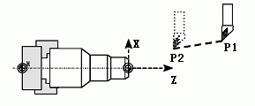 注：G00时各轴单独的快速移动速度由机床厂家设定（参数NO.022~023j）。受快速倍率开关控制（F0，25%，50%，100%），用F指定的进给速度无效。
|
| G01 直线插补(G01) |
格式 G01 X(U)_ Z(W)_ F_ ; 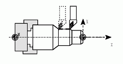 利用这条指令可以进行直线插补。根据指令的X，Z/U，W分别为绝对值或增量值，由F指定进给速度，F在没有新的指令以前，总是有效的，因此不需一一指定。 （程序实例）
① 绝对坐标程序 G01 X50. Z75. F0.2 ; X100.; ② 增量坐标程序 G01 U0.0 W-75. F0.2 ; U50. 注：各轴方向的速度如下： 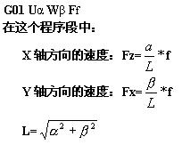 |
| G02/G03 圆弧插补 (G02, G03) |
|
格式 G02 X_Z_ R_F G03 X_Z_ I_K_F
所谓顺时针和反时针是指在右手直角坐标系中，对于ZX平面，从Z轴的正方向往负方向看而言，如下图例。 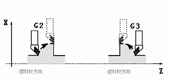 举例
① 绝对坐标系程序
|

| G32 切螺纹(G32) |
用G32指令，可以切削相等导程的直螺纹，锥螺纹和端面螺纹。 
G00 X29.4; (1循环切削)
|
| G28 自动返回机械原点(G28) |
格式 G28 X（U）__Z(W)__； 利用上面指令，可以使指令的轴自动返回到参考点。X（U）__Z(W)__指定返回到参考点路途经过的中间点，用绝对值指令或增量值指令。注1：在电源接通后，如果一次也没进行手动返回参考点，指令G28时，从中间点到参考点的运动和手动返回参考点时相同，此时从中间点运动的方向为参数（NO.006 ZMZ）设定的返回参考点的方向。 注2：若程序加工起点与参考点（机械原点）一致，可执行G28返回程序加工起点。 注3：若程序加工起点与参考点（机械原点）不一致，不可执行G28返回程序加工起点，可通快速定位指令或回程序起点方式回程序加工起点。
|
| G04 暂停(G04) |
1. 格式 G04 P__；或者G04 X；或者G04 U__； 利用暂停指令，可以推迟下个程序段的执行，推迟时间为指令的时间。 以秒为单位指令暂停时间。指令范围从0.001～99999.999秒。如果省略了P，X，指令则可看作是准确停。 |
| G50 坐标系设定(G50) |
1. 格式 G50 X(x) Z(z)； 根据此指令，建立一个坐标系，使刀具上的某一点，例如刀尖在此坐标系中的坐标为（x,z）。 此坐标称为零件坐标系。坐标系一旦建立后，后面指令中绝对值指令的位置都是用此坐标系中该点位置的坐标值来表示的。 当直径指定时，X值是直径值，半径指定时是半径值。 注：在补偿状态，如果用G50设定的坐标系，那么补偿前的位置是用G50设定的坐标系中的位置。
|
| G98 每分进给(G98) |
G98是每分进给状态。 刀具每分钟走的距离，用F后续的数值直接指令。 G98是模态的，一旦指令了G98状态，在G99（每转进给）指令之前，一直有效。
|
| G99 每转进给 |
G99是每转进给状态。主轴每转刀具的进给量用F后续的数值直接指令。 G99是模态的，一旦指令性了G99状态，在G98（每分进给）指令之前，一直有效。
注1：当位置编码器的转速在1转/分以下时，速度会出现不均匀地加工，可用1转/分以下的转速，这种不均匀会达到什么程度，不能一概而论，不过在1转/分以下，转速越慢，越不均匀。 注2：G98，G99是模态的，一旦指令了，在另一个代码出现前，一直有效。 注3：F代码最多允许输入7们，但是，即使输入进给速度值超过限制值，移动时也限制值上。 注4：使用每转进给时，主轴上必须装有位置编码器。 |
||||||||||||||||||
| G96，G97 恒线速控制（G96，G97） |
所谓的恒线速控制是指S后面的线速度是恒定的，随着刀具的位置变化，根据线速度计算出主轴转速，并把与其对应的电压值输出给主轴控制部分，使得刀具瞬间的位置与工件表面保持恒定的关系。 线速度的单位如下：
线速度单位根据机械厂家不同有时会不同。 恒线速控制指令如下： G96 S__； S后指定线速度恒线速控制指令取消如下： G97 S__； S后指令主轴转速恒线速控制时，旋转轴必须设定在零件坐标的Z轴（X=0）上来。 （1）主轴速度倍率对于指定的线速度或转速，根据主轴的倍率选择，可以使用50，60，70，80，90，100，110，120%的倍率。 （2）主轴最高转速限制用G50 S后续的数值，可以指令恒线速控制的主轴最高转速（转/分）。 G50 S__；在恒线速控制时，当主轴转速高于上述程序中指定的值时，则被限制在主轴最高转速上。 （3）快速进给（G00）时的恒线速控制对于用G00指令的快速进给程序段，当恒线速控制时，不进行时刻变化的刀具位置的线速度控制，而是计算程序段终点位置的线速度。这是因为快速不进行切削的缘故。 注1：当电源接通时，对于没设定主轴最高转速的状态，即为不限制状态。 注2：对于限制，只适用于G96状态，G97状态时不限制。 注3：G50，S0；意味着限制到0米/分。 注4：在G96状态中，被指令的S值，即使在G97状态中也保持着。当返回到G96状态时，其值恢复。 G96 S50；（50米/分） G97 S1000；（1000转/分） G96 X3000；（50米/分）注5：机床锁住时，机械不动，对应程序中X坐标值的变化，进行恒线速控制。 注6：切螺纹时，恒线速控制也是有效的，因此切螺纹时，用G97方式使恒线速控制无效，以使主轴以同一转速转动。 注7：每转进给（G99），在恒线速控制方式下（G96），虽然无使用意义，但仍有效。 注8：从G96状态变为G97状态时，G97程序段如果没有指令S码（转/分），那么G96状态的最后转速作为G97状态的S码使用。 N100 G97 S800；（800转/分） … N200 G96 S100；（100米/分） … … N300 G97；（X转/分） X是N300前一个程序段的转速，即从G96状态变为G97状态时，主轴速度不变。G97―G96时，G96状态的S值有效。如果S值没有指令，则S=0米/分。注9：恒线速控制中指定的线速度是相对于编程轨迹的，而不是刀补后的位置的线条速度。
|
| G90 外圆，内圆车削循环（G90） |
|
(a)用下述指令，可以进行圆柱切削循环。 G90 X(U)__ Z(W)__ F__;增量值指令时，地址U、W后的数值的方向，由轨迹1和2的方向来决定。在上述循环中，U是负，W也是负。 在单程序段时，用循环下去进行1，2，3，4动作。 (b)用下述指令，可以进行圆锥切削循环。 G90 X(U)__ Z(W)__ R__ F__; 外圆切削循环 1. U<0, W<0, R<0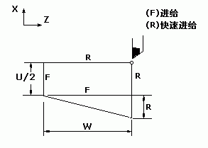 2. U>0, W<0, R>0 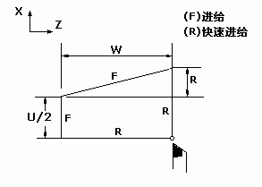 3. U<0, W<0, R>0 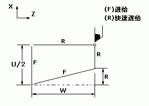 4. U>0, W<0, R<0
|


| G92 螺纹切削循环（G92切螺纹可以不需退刀槽） |
(a)用下述指令，可以进行直螺纹切削循环。 G92X（U）__Z(W)__F__；（公制螺纹） 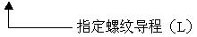 G92X（U）__Z(W)__I__；（英制螺纹）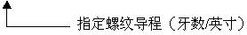 英制螺纹导程‘I’为非模态指令，不能省略。
增量值指令的地址U、W后续数值的符号，根据地轨迹1和2的方向决定。即，如果轨迹1的方向是X轴的负向时，则U的数值为负。螺纹导程范围，主轴速度限制等，与G32的螺纹切削相同。 单程序段时，1，2，3，4的动作单段有效。 参数019THDCH为退尾长度设置，螺纹倒角宽度=THDCH*1/10*螺距。 注1：关于螺纹切削的注意事项，与G32螺纹切削相同。但是，螺纹切削循环中的进给保持的停止为下述情况：进给保持……3的动作结束后停止。 (b)用下述指令，可以进行圆锥螺纹切削循环。 G92X（U）__Z(W)___R__F__； G92X（U）__Z(W)___R__I__； 英制螺纹导程‘I’为非模态指令，不能省略。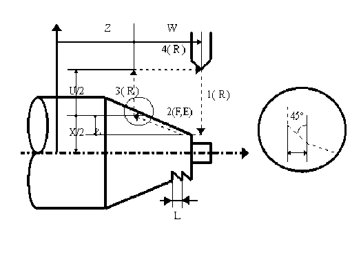 |
| G94 端面车削循环（G94） |
 (a)用下述指令，可以进行端面切削循环。 G94 X（U）__Z(W)__F__； 增量指令性时，地址U、W后续数值的符号由轨迹1和2的方向来决定。即，如果轨迹1的方向是Z轴的负向，则W为负值。单程序段时，用循环起动进行1，2，3，4动作。 (b)用下述指令性时，可以进行锥度端面切削循环。 G94 X（U）__Z(W)__R__F__；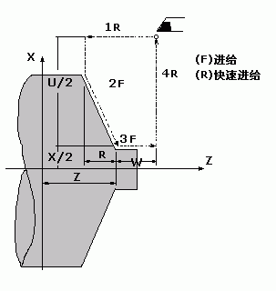 注1：固定循环中的数据X（U），Z（W），R和G90，G92。G94一样，都是模态值，所以当没有指定新的X（U），Z（W），R的数据，当指令了G04以外的非模态G代码或G90，G92，G94以外的01级的代码时，被清除。 注2：下述三种情况是允许的 (1)在固定循环的程序段后面是只有EOB（；）的程序段或者无移动指令的程序时，则重复此固定循环。 (2)用录入方式指令固定循环时，当此程序逻辑段结束后，只用起动按钮，可以进行和前面同样的固定循环。 (3)在固定循环状态中，如果指令了M，S，T，那么，固定循环可以和M，S，T功能同时进行。如果不巧，象下述例子那样指令M，S，T后取消了固定循环（由于指令G00，G01）进，请再次指令固定循环 |
| G71 外圆粗车循环（G71） |
如图所示，在程序中，给出A―A`―B之间的精加工形状，留出△U/2，△W精加工余量，用△D表示每次的切削深量。
格式 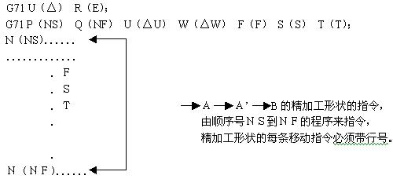 △D：切深，无符号。切入方向由AA`方向决定。（半径指定）。该指定是模态的，一直到下个指定以前均有效。并且用参数（NO.051）也可指定。根据程序指令，参数值也改变。 E：退刀量。是模态值，在下次指定前均有效。用参数(No.052)也可设定，用程序指令时，参数值也改变。 NS：精加工形状程序段群的第一个程序段的顺序号。 NF：精加工形状程序段群的最后一个程序段的顺序号。 △U：X轴方向精加工余量的距离及方向（直径/半径指定）。 △W：Z轴方向精加工余量的距离及方向。 F，S，T：在G71循环中，顺序号NS~NF之间程序段中的F，S，T功能都无效，全部忽略，仅在有G71指令的程序段中，F，S，T是有效的。 注1：△D，△U都用同一地址U指定，其区分是根据该程序段有无指定P，Q区别。注2：循环动作由P，Q指定的G71指令进行。 在A至B间的移动指令中的F，S及T无效，G71程序段或以前指令的F，S，T有效。另外，在带有恒线速控制选择功能时，在A到B间的移动指令中的G96或G97无效，在含G71或以前程序段指令的有效。 在A至A`间，顺序号NS的程序段中，可含有G00或G01指令，但不能含有Z轴指令。在A`至B间，X轴，Z轴必须都是单调增大或减小。 注3：在顺序号NS到NF的程序段中，不能调用子程序。
|

| G72 端面粗车循环（G72） |
如图所示，与G71相同，用与X轴平行的动作进行切削。 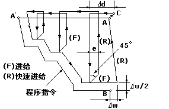 格式 G72 W（△D） R（E）； G72 P（NS） Q（NF） U（△U） W（△W） F（F） S（S） T（T）； △D，E，NS，△U，△W，F，S，T和G71相同。 在A至A`之间，在顺序号NS的程序段中，可含有G00或G01指令，但不能含有X轴的指令。在A`至B之间，X轴，Z轴方向必须都是单调增大或减小的图形。 |
| G73 封闭切削循环（G73） |
利用该循环，可以按同一轨迹重复切削，每次切削刀具向前移动一次，因此对于锻造，铸造等粗加工已初步形成的我坯，可以高效率地加工。 
程序中指令的图形，A点―A`点―B点 格式 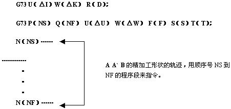 △I：X轴方向退刀的距离及方向（半径指定）。这个指定是模态的，一直到下次指定前均有效。并且，用参数（No53）也可设定。根据程序指令，参数值也改变。 △K：Z轴方向退刀距离及方向。这个指定是模态的，一直到下次指定之前均有效。另外，用参数（No054）也可设定。根据程序指令，参数值也改变。 D：分割次数……等于粗车次数。该指定是模态的，直到下次指定前均有效。也可以用参数（No055）设定。根据程序指令，参数值也改变。 NS：构成精加工形状的程序段群的第一个程序段的顺序号。 NF：构成精加工形状的程序段群的最后一个程序段的顺序号。 △U：X轴方向的精加工余量（直径/半径指定）。 △W：Z轴方向的精加工余量。 F，S，T：在NS～NF间任何一个程序段上的F，S，T功能均无效。仅在G73中指定的F，S，T功能有效。注1：△I，△K，△U，△W都用地址U，W指定，它们的区别，根据有无指定P，Q来判断。 注2：循环动作G73指令的P，Q来进行。切削形状可分为四种，编程时请注意△U，△W，△I，△K的符号。循环结束后，刀具就返回A点。
|
| G70 精加工循环（G70） |
格式 G70 P(ns) Q(nf)；在用G71，G72，G73粗车后时，可以用上述指令精车。 NS：构成精加工形状的程序段群的第一个程序段的顺序号。 NF：构成精加工形状的程序段群的最后一个程序段的顺序号。 NS与NF顺序号之间只有包含五个程序段。 注1：在含G71，G72，G73程序段中指令的F，S，T对于G70的程序段无效，而顺序号NS~NF间指令的F，S，T为有效。注2：G70的循环一结束，刀具就用快速进给返回始点，并开始读入G70循环的下个程序段。 注3：在G70~G73间被使用的顺序号NS~NF间程序段中，不能调用子程序。 |
| G74 端面深孔加工循环（G74） |
按照下面程序指令，进行如图所示的动作。在此循环中，可以处理外形切削的断屑，另外，如果省略X（U），P，只是Z轴动作，则为深孔钻循环。
格式 G74 R（e）； G74 X（U） Z（W） P（△i）Q(△k) R(△d) F(f)； e：每次沿Z方向切削△k后的退刀量。另外，没有指定R（e）时，用参数（No056）也可以设定，根据程序指令，参数值也改变。 X：B点的X方向绝对坐标值。 U：A到B的增量。 Z：C点的Z方向绝对坐标值。 W：A到C的增量。 △i：X方向的每次循环移动量（无符号）（直径）。 △k：Z方向的每次切削移动量（无符号）。 △d：切削到终点时X方向的退刀量（直径），通常不指定，省略X（U）和△I时，则视为0。 f：进给速度。 注1：e和△d都用地址R指定，它们的区别根据有无指定X（U），也就是说，如果X（U）被指令了，则为△d。 注2：循环动作用含X（U）指定的G74指令进行。 |

| G75 外圆、内圆切槽循环（G75） |
根据下面程序指今，进行如所示的动作。相当于在G74是，把X和Z调换，在此循环中，可以进行端面的断屑处理，并且可以对外径进行沟槽加工和切断加工（省略Z、W、Q） 格式 G75R（E）； G75X（U）Z（W）P（△I）Q（△K）R（△D）F（F）；
e：每次沿Z方向切削△i后的退刀量。另外，用参数（No056）也可以设定，根据程序指令，参数值也改变。 X：C点的X方向绝对坐标值。 U：A到C的增量。 Z：B点的Z方向绝对坐标值。 W：A到B的增量。 △i：X方向的每次循环移动量（无符号）（直径）。 △k：Z方向的每次切削移动量（无符号）。 △d：切削到终点时Z方向的退刀量，通常用不指定，省略X（U）和△I时，则视为0。 f：进给速度。 G74，G75都可用于切断、切槽或孔加工。可以使刀具进行自动退刀。 |